Nishinomiya, Hyogo: things to do, food and stays
Nishinomiya · Hyogo
Nishinomiya
Highlighted on the Hyogo map.

Stay
ホテルヒューイット甲子園

Hotel Hyuitto Koshien
ゲストハウスANCHOR
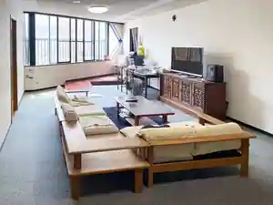
Guesthouse ANCHOR
ホテルリブマックス西宮
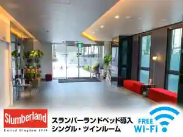
Hotel Ribumakkusu Nishinomiya
Hotel in Hon, Nishinomiya; 4-minute walk from Hanshinhonsen(Nishinomiya) Station.
ＨＯＴＥＬ Ｕ’ｓ 香枦園
HOTEL U s Kaori Ro Sono
ホテルリッツ甲子園
Hotel Rittsu Koshien
Hotel in Koshiensutori, Nishinomiya with parking; 5-minute drive from Chushajomuryo!Koshien Station.
ホテル甲子園
Hotel Koshien
Hotel in Koshiensutori, Nishinomiya with business travelers.
甲子園ホテル夕立荘
Koshien Hotel Yudachi So
Inn in Nishinomiya with breakfast available and a large communal bath.
やっこ旅館
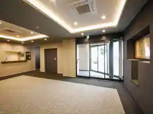
Yakko Ryokan
Dining
丸安

Maru An
鮨 まつ本
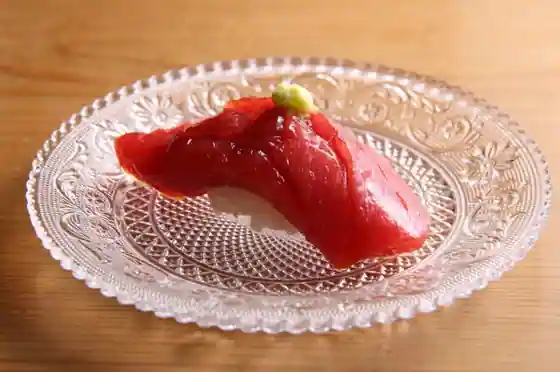
Sushi Matsu Hon
本格手打 いわしや 西宮店
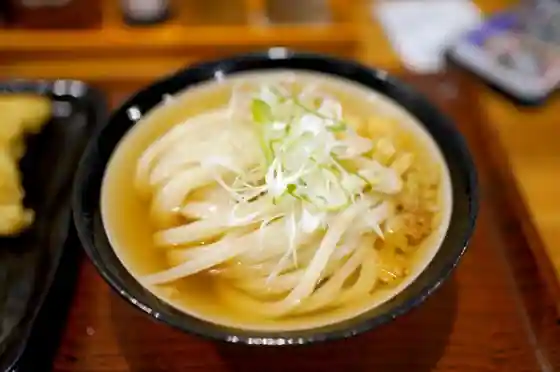
Honkaku Teuchi Iwashiya Nishinomiya
鮨 稲荷 たけ屋
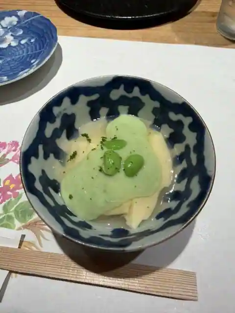
Sushi Inari Take Ya
ダ・ルーポ322
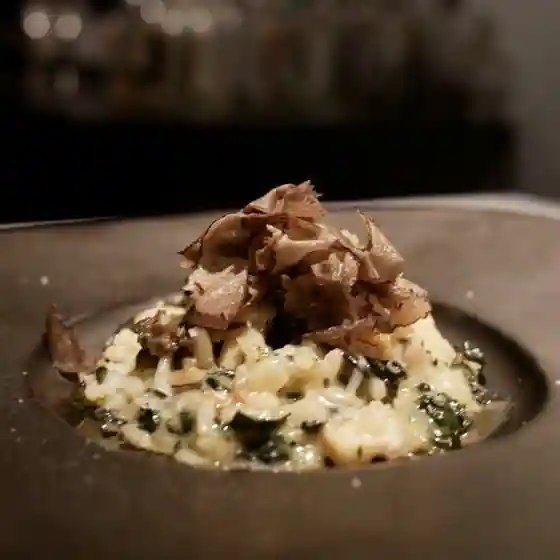
Da Rupo 322
甲陽園 すし佳
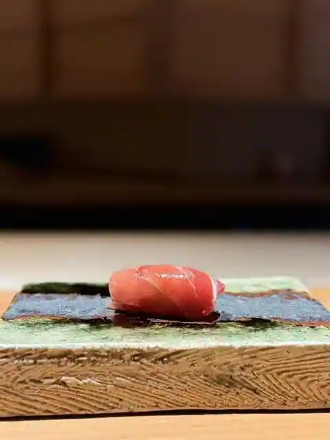
Koyoen Sushi Ka
讃歌うどん はんげしょう
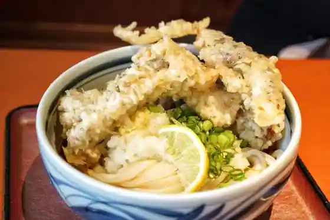
Sanka Udon Hangesho
焼き鳥 龍
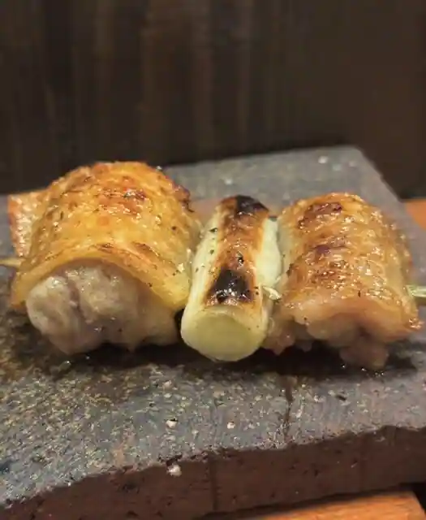
Yakitori Ryu
コンセントマーケット
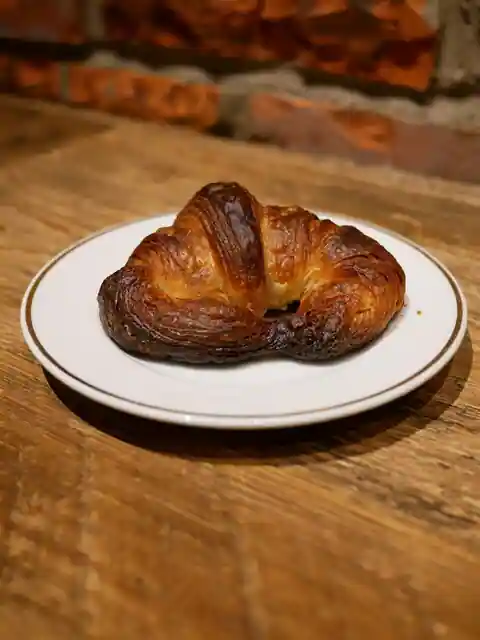
Konsentomaketto
日本料理 子孫
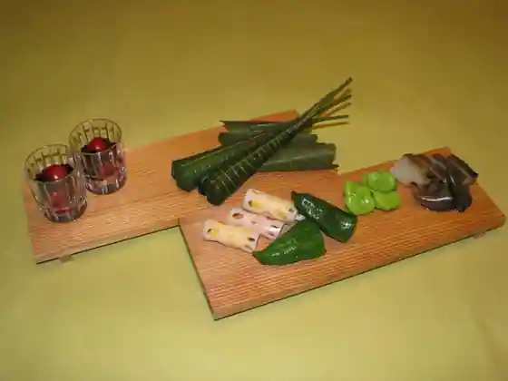
Nihonryori Shison
鮨割烹 汐
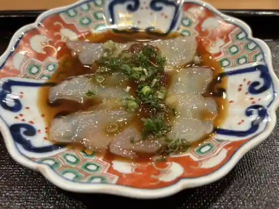
Sushi Kappo Shio
おかもと
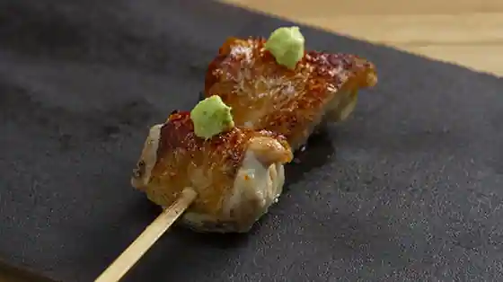
Okamoto
ツマガリ 甲陽園本店
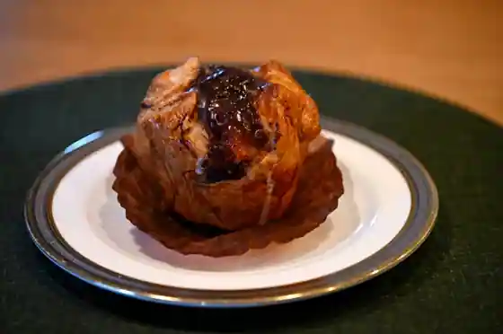
Tsumagari Koyoen Hon
ミッシェルバッハ
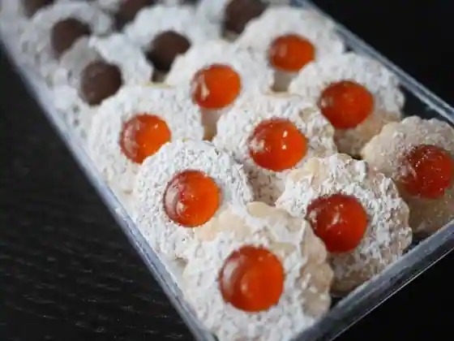
Misshierubahha
炭火串焼専門店 鶏天
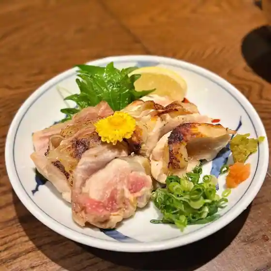
Sumibi Kushiyaki Senmon Niwatori
BLU CHIARO
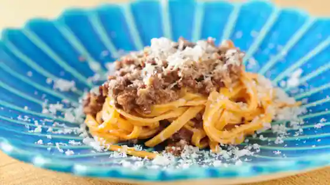
BLU CHIARO
パティシエ・エイジ・ニッタ
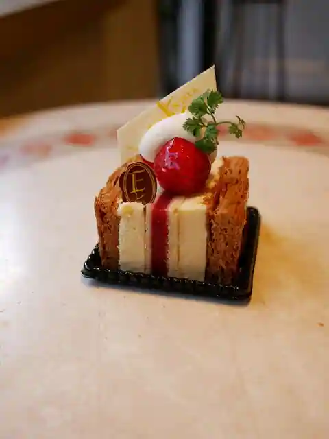
Pateishie Eiji Nitta
とんかつ ぶたしょう
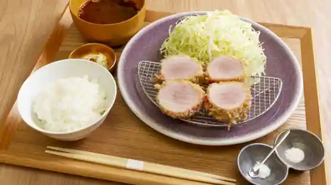
Tonkatsu Butasho
ameen’s oven
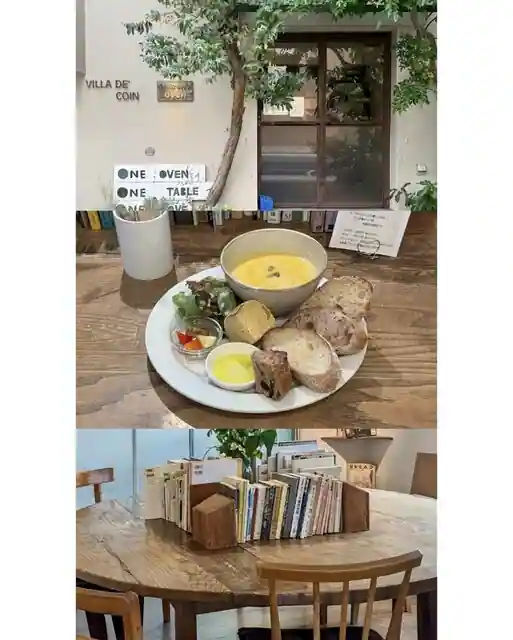
ameen s oven
ラ バゲット ド パリ ヨシカワ
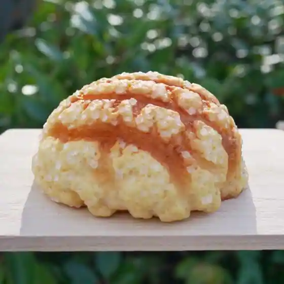
Ra Bagetto Do Pari Yoshikawa
ブーランジェリー ミヤナガ
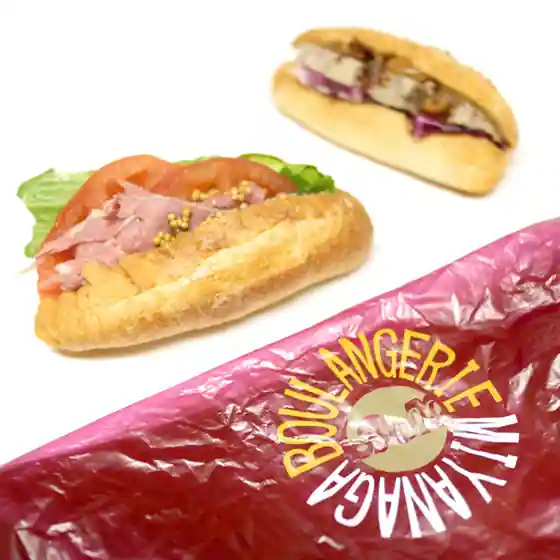
Buranjieri Miyanaga
リョウイチヤマウチ
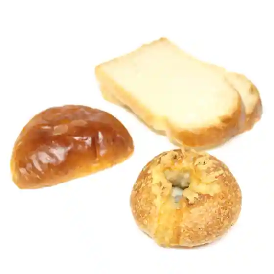
Ryouichiyamauchi
エルベラン
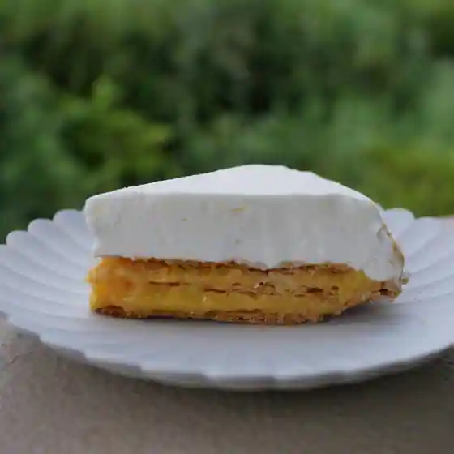
Eruberan
ル ベナトン
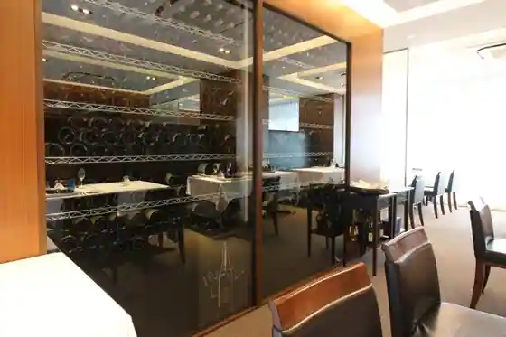
Ru Benaton
Sights
Kizzania Koshien

Kan Shin no Kan Juan
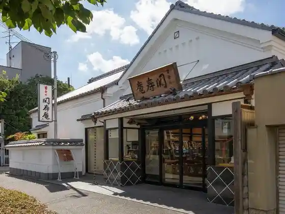
Shirataka Roku Mizu En
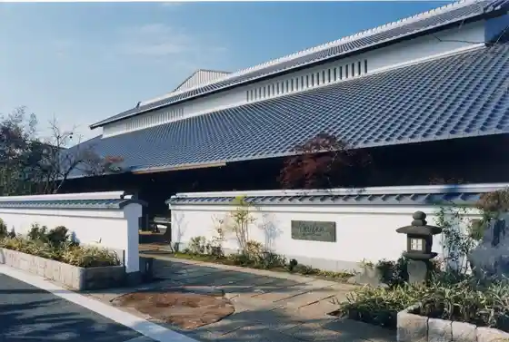
Nishinomiya Shrine (Nishinomiya Ebisu)
Sake Museum (Shiroshika Kinen Shuzo Museum) Shiroshika Kurashikkusu
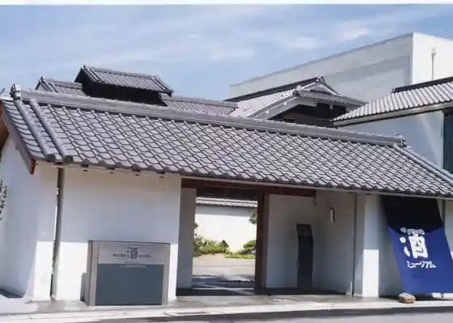
Monko Yakujin Toko Tera
Hanshin Koshienkyujo